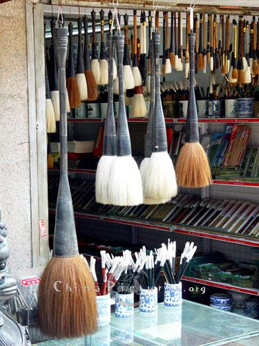

Trang chủ
Trang chủTrung Hoa gọi là “Mao Bút”, là một tuyệt phẩm của nhân loại (theo truyền thuyết bút lông được người Trung Quốc phát minh khoảng 221 năm trước Công Nguyên). Nguyên liệu thường được dùng để làm bút ban đầu chủ yếu dùng lông cầm thú như lông dê, lông hưu, lông nai, lông heo, lông cọp, báo… Trải qua hơn 2000 ngàn năm, cây bút lông được người Trung Quốc hoàn thiện dần và tạo ra nhiều chủng loại, mẫu mã, tính năng phong phú đa dạng.
Cấu tạo của bút lông gồm hai phần: Thân bút (cán bút) và ngọn bút. Có rất nhiều chủng loại khác nhau từ trước đến nay, mỗi loại có một đặc tính và chức năng khác nhau. Sự khác biệt đó là do chất liệu cũng như độ dài của lông được dùng làm ngọn bút.
Có 3 loại bút lông chính: Bút lông mềm, bút lông cứng, và bút lông pha.
- Bút lông mềm: Thường được chế tạo từ lông dê, tóc thai nhi…Với tính năng mềm mại nhu nhuyễn, nên hấp thu được nhiều mực tạo ra nét chữ đầy đặn, nét bút linh hoạt uyển chuyển khi vận bút.
- Bút lông cứng: Thường được chế tạo từ lông thỏ lông sói, râu chuột… Với tính năng cương kiện, đầu bút chắc khoẻ, có tính đàn hồi cao. Nhưng khi hạ bút khó tạo được đường cong, nhấc bút thường để lại dấu, hay lộ rõ những mảng sướt của ngọn bút trên mặt giấy.
- Bút lông pha: Kết hợp loại lông cứng và lông mềm để tạo ra một loại bút có tính năng dung hoà, loại bút này vừa có nhu, có cương hỗ trợ cho nhau về các tính năng nên rất tiện để sử dụng.
Đối với người mới tập viết dùng loại bút lông cứng và có chiều dài lông ngắn thì dễ điều khiển hơn. Đối với người đã thành thạo, có nhiều kinh nghiệm nên sử dụng loại bút lông mềm với tính năng mềm mại hơn, dễ dàng sáng tạo những đường nét đặc biệt với hiệu quả riêng của nó. Với loại bút lông pha thì ta được đặc tính của cả hai loại bút, thích hợp với những tác phẩm có kích thước lớn.
Chiều dài ngọn bút cũng ảnh hưởng không ít đến sự thành công của tác phẩm. Những loại bút có đầu lông dài và dày thường giữ được lượng mực nhiều hơn, hạn chế việc ngừng lại chấm thêm mực khi đang viết sẽ gián đoạn cảm xúc của người viết. Nếu bạn muốn viết tác phẩm với kích thước nhỏ, cũng nên dùng cây bút có kích thước to hơn kích thước một nét chính trong chữ, như thế bút mới chứa đủ mực để viết, nét sẽ dày và mạnh mẽ. Không nên tì hết mức ngọn bút xuống mặt giấy để viết chữ to, khi đó ngọn bút tòe ra và không đàn hồi lại được, lượng mực được giữ trong phần bụng bút sẽ bị thấm hết ra giấy phải tốn thêm giai đoạn chấm mực và vuốt cọ. Đối với loại bút nhỏ thì không bao giờ nên dùng để viết chữ to hơn nó.
Đối với người mới tập viết dùng loại bút lông cứng và có chiều dài lông ngắn thì dễ điều khiển hơn. Đối với người đã thành thạo, có nhiều kinh nghiệm nên sử dụng loại bút lông mềm với tính năng mềm mại hơn, dễ dàng sáng tạo những đường nét đặc biệt với hiệu quả riêng của nó. Với loại bút lông pha thì ta được đặc tính của cả hai loại bút, thích hợp với những tác phẩm có kích thước lớn.
CÁCH CHỌN BÚT:Khi mua bút về sau khi rửa sạch lớp keo, bạn nhúng bút vào nước và giũ thật mạnh. Nếu bút tốt thì sẽ hội đủ các yếu tố sau đây: TIÊM, TỀ, VIÊN, KIỆN.
-Tiêm nghĩa là nhọn, khi nhúng ngọn bút vào mực hay nước thì lông bút túm lại đến phần đầu bút phải thật nhọn.
-Tề là ngay ngắn, tất cả các sợi lông phải được xếp đều đặn ngay ngắn từ gốc đến ngọn, không xiên qua xéo lại. Lúc bút khô, xoè ngọn bút ra trên mặt giấy, nếu thấy lông bút xòe đều ra như hình rẽ quạt thì là bút tốt.
-Viên là tròn đều, quan sát thấy xung quanh ngọn bút no đầy, bốn mặt tròn đều không bị lõm vào hay lồi ra.
- Kiện là cứng cáp, ngọn bút có độ đàn hồi cao, nhấn bút xuống mặt giấy khi nhấc lên, ngọn bút trở lại trạng thái ban đầu.
Khi mua bút chúng ta chỉ quan sát được ngọn bút có nhọn và tròn đều hay không thôi, vì bút được nhúng một loại hồ đặc biệt của nhà sản xuất.
Cán bút thường được làm bằng tre, gỗ, sành , sứ hoặc sừng…Dù được làm bằng chất liệu gì đi nữa thì cán bút phải thẳng và tròn đều.
SỬ DỤNG VÀ BẢO QUẢN BÚT:
Khi mua bút lông về, phải ngâm vào nước lã khoảng 15-30 phút cho tan đi phần hồ. Sau đó rửa sạch. Mỗi lần sử dụng nên nhúng ngọn bút vào nước cho bút “no nước” sau đó dùng khăn giấy để thấm bớt nước ra rồi mới chấm vào mực. Sau mỗi lần sử dụng phải rửa bút thật sạch bằng nước lã, không nên để bút bị khô hoặc ngâm bút quá lâu trong thố rửa mực, ngọn bút sẽ bị cong. Sau khi rửa, vuốt bút thật nhọn và treo ngược lên giá cho đến khi bút khô có thể cất vào hũ đựng bút.
Bút sử dụng càng lâu, càng mềm tạo cảm giác quen tay, khi sử dụng sẽ linh hoạt, nếu bảo quản kỹ sẽ sử dụng được lâu không phải thay bút mới. Trong quá trình sử dụng nếu có sợi lông nào bị tưa ra thì nên dùng kéo cắt đi, không nên bức bằng tay hoặc giật ngược ra sau tránh làm ảnh hưởng đến những phần lông còn lại.
Trích Thư pháp Việt lý thuyết và thực hành của Đăng Học.
 Trang chủ
Trang chủ You Tube
You Tube Facebook
Facebook Twitter
Twitter